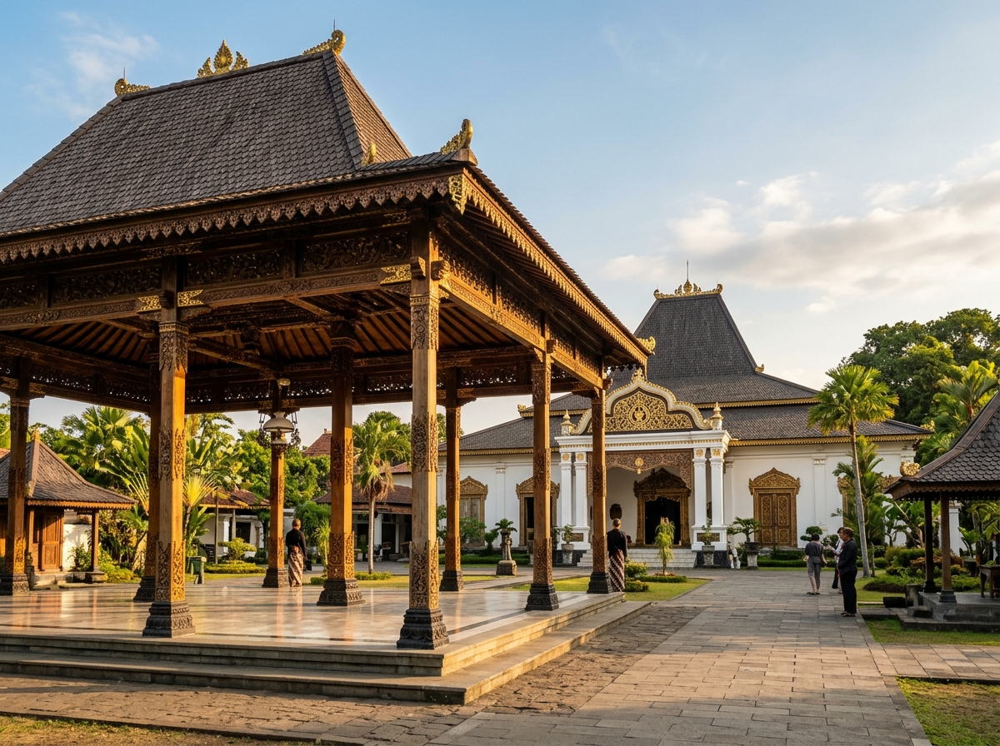
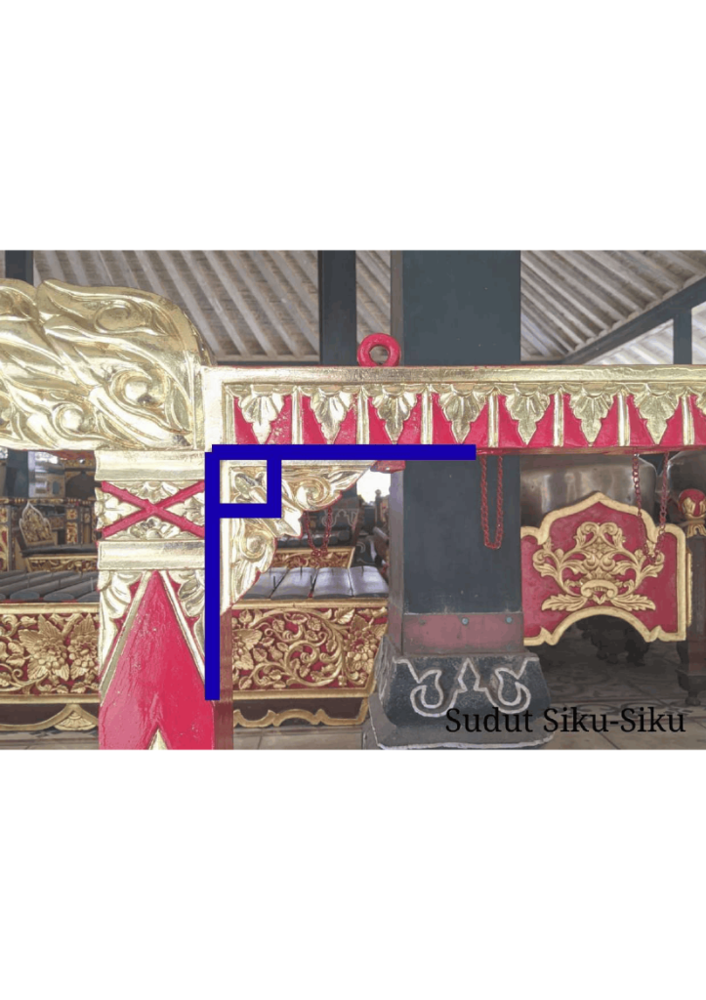
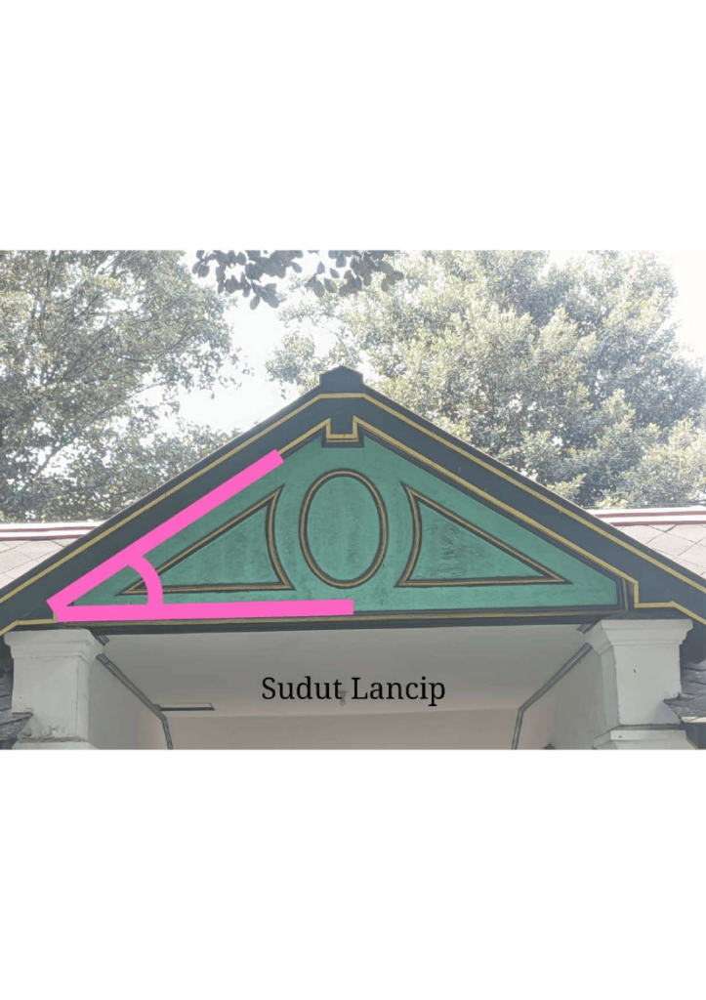
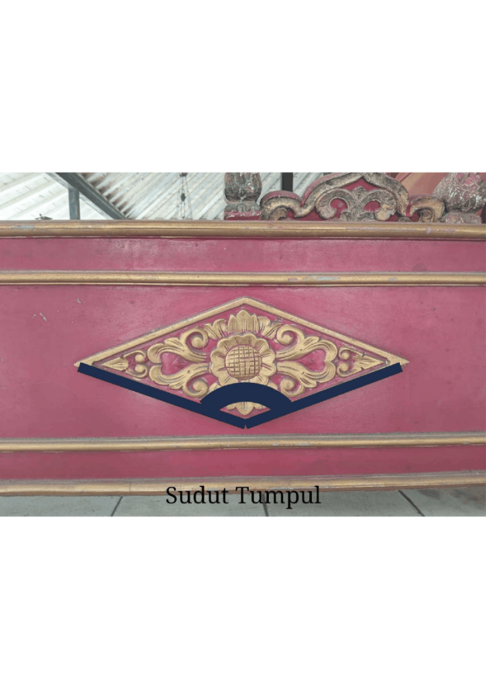

Mengenal Sudut di Sekitar Kita.
Eksplorasi konsep sudut (bagian, jenis, dan pengukuran sudut) melalui keindahan seni ukir, arsitektur megah, dan ornamen budaya Kraton Yogyakarta.

Kraton Ngayogyakarta Hadiningrat · Warisan Arsitektur & Geometri
Tujuan Pembelajaran
Setelah mempelajari media pembelajaran ini, peserta didik Kelas V diharapkan mampu mencapai capaian berikut:
Menunjukkan titik sudut dan kaki sudut pada benda konkret di lingkungan sekitar.
Membedakan jenis-jenis sudut: sudut lancip, sudut siku-siku, dan sudut tumpul.
Mengukur besar sudut menggunakan busur derajat secara teliti dan benar.
Menemukan penerapan konsep sudut pada bangunan & karya seni budaya Kraton Yogyakarta.
Kenali konsep dan jenis sudut
Pelajari pengertian dasar sudut, bagian-bagian sudut, macam-macam ukuran sudut, serta teknik pengukuran menggunakan busur derajat.
Bagian-Bagian Sudut
Ketahui bagaimana dua sinar garis bertemu pada satu titik membentuk titik sudut dan kaki sudut.
Pelajari bagian sudut ↗Jenis-Jenis Sudut
Kenali 7 ragam sudut: sudut nol, lancip, siku-siku, tumpul, lurus, refleks, hingga sudut penuh.
Pelajari jenis sudut ↗Busur Derajat
Pelajari 4 langkah mudah meletakkan titik pusat busur derajat untuk mengukur sudut dengan akurat.
Pelajari cara mengukur ↗Apa itu Sudut?
Sudut adalah daerah yang terbentuk dari dua garis lurus yang berpotongan atau bertemu pada satu titik pangkal yang sama.
Bagian-Bagian Penting pada Sudut:
- Titik Sudut (Vertex): Titik temu pangkal di mana kedua kaki sudut bertemu.
- Kaki Sudut: Dua garis lurus yang membentuk daerah sudut tersebut.
- Daerah Sudut: Daerah yang dibatasi oleh kedua kaki sudut, diukur dalam satuan derajat (°).
7 Jenis Sudut dalam Matematika
Berdasarkan besar ukurannya dalam derajat (°), sudut dibagi menjadi:
Sudut Nol
Besar = 0°Kedua kaki sudut berimpit dan tidak membentuk daerah bukaan sudut sama sekali.
Sudut Lancip
0° < x < 90°Bukaan sudut lebih kecil dan lebih runcing daripada sudut siku-siku. Contoh: atap joglo.
Sudut Siku-Siku
Tepat 90°Terbentuk dari dua garis yang saling tegak lurus. Contoh: pertemuan tiang dan balok.
Sudut Tumpul
90° < x < 180°Bukaan sudut lebih lebar dari 90° tapi belum membentuk garis lurus. Contoh: ornamen wajik.
Sudut Lurus
Tepat 180°Kedua kaki sudut berlawanan arah dan membentuk garis lurus sempurna.
Sudut Refleks
180° < x < 360°Sudut dengan putaran lebih besar dari sudut lurus tetapi belum satu putaran penuh.
Sudut Penuh
Tepat 360°Satu putaran penuh kembali ke posisi semula (lingkaran penuh).
Langkah Mengukur Sudut dengan Busur Derajat
Letakkan titik pusat busur derajat tepat di atas titik sudut yang akan diukur.
Himpitkan garis dasar busur derajat (angka 0°) tepat berimpit dengan salah satu kaki sudut.
Lihat kaki sudut yang lain dan baca angka pada skala busur yang dilewati kaki sudut tersebut.
Tuliskan besar derajatnya (misal: 45°, 90°, 120°) beserta jenis sudutnya.
Latihan Terbimbing
Soal: Sebuah sudut diukur menggunakan busur derajat dan menunjukkan angka 65°. Termasuk ke dalam jenis sudut apakah itu?
💡 Pembahasan: Karena 65° berada di antara 0° dan 90°, maka sudut tersebut adalah Sudut Lancip.
Sudut dalam Budaya Kraton Yogyakarta
Etnomatematika mengamati kearifan lokal arsitektur dan ornamen budaya Kraton Yogyakarta. Mari amati letak sudut dan perkiraan besar sudutnya.

⚜ 90° · TEGAK LURUSPertemuan Tiang & Balok
Garis penanda biru memperlihatkan balok horizontal bersilangan tegak lurus dengan tiang vertikal pada rangka gamelan berukir emas Kraton Yogyakarta.

⚜ < 90° · RUNCINGBubungan Atap Segitiga
Garis merah muda menunjukkan sudut di puncak atap segitiga gerbang Kraton bernuansa hijau-emas. Bukaan sudutnya lebih sempit dari 90°.

⚜ > 90° · LEBAROrnamen Bunga Wajik
Garis lengkung biru tua menandai sudut bagian bawah pada ornamen bunga belah ketupat kayu merah-emas. Bukaan sudutnya melebar lebih dari 90°.
Motif Batik Parang: Garis Miring dan Sudut
Batik Parang merupakan salah satu motif larangan tertua khas Kraton Yogyakarta. Pola lerengnya tersusun dari garis-garis diagonal miring yang berulang membentuk sudut kemiringan sekitar 45° (Sudut Lancip) terhadap sumbu horizontal kain.
Simulator Busur & Detektif Sudut
Praktikkan langsung pengukuran sudut virtual dan pecahkan misi rahasia mencari sudut tersembunyi pada artefak Kraton!
Simulator Busur Derajat
Geser tuas di bawah untuk memutar kaki sudut dan perhatikan perubahan besaran derajatnya secara langsung:
Detektif Sudut Kraton
Misi 1: Amati Bubungan Atap Bangunan Kraton
Perhatikan sudut lancip di pucuk bubungan atap Kraton. Apa jenis sudut yang terbentuk?
Uji Pemahamanmu
Jawab pertanyaan tentang bagian sudut, jenis sudut, dan etnomatematika Kraton. Setelah diperiksa, nilai dan pembahasan lengkap akan langsung ditampilkan.
Budaya bisa menjadi pintu masuk untuk belajar matematika.
Etnomatematika menghubungkan konsep matematika formal dengan aktivitas, peninggalan arsitektur, dan ragam hias kebudayaan di sekitar kita. Melalui peninggalan adiluhung Kraton Yogyakarta, siswa diajak melihat bahwa matematika bukanlah rumus yang abstrak, melainkan bagian nyata dari sejarah, keindahan seni ukir, dan konstruksi bangunan tradisional para leluhur bangsa.